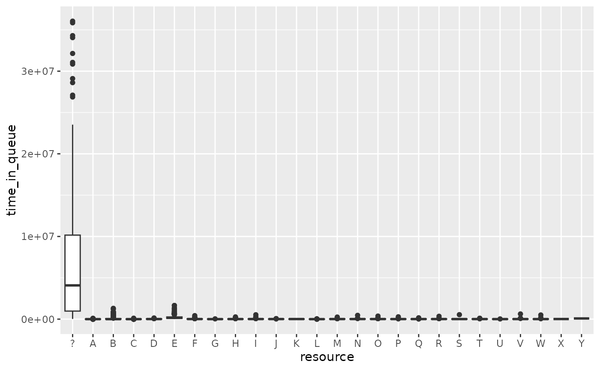

library(edeaR)
#>
#> Attaching package: 'edeaR'
#> The following object is masked from 'package:base':
#>
#> setdiff
library(dplyr)
#>
#> Attaching package: 'dplyr'
#> The following objects are masked from 'package:stats':
#>
#> filter, lag
#> The following objects are masked from 'package:base':
#>
#> intersect, setdiff, setequal, unionCalculate queueing times
The function calculate_queueing_times can be used to calculate for each activity instance in the log when it was started, and since when it was queued. (That is, each activity instance except the first one for each case).
For example, for the sepsis event log
library(eventdataR)
calculate_queuing_times(sepsis) -> queuing_timesThe result is the following:
queuing_times
#> # A tibble: 14,164 × 7
#> case_id activity activ…¹ resou…² started in_queue_since
#> <chr> <fct> <chr> <fct> <dttm> <dttm>
#> 1 XJ ER Triage 3835 C 2013-11-07 08:29:18 2013-11-07 08:18:29
#> 2 XJ ER Sepsis Tr… 3836 A 2013-11-07 08:37:32 2013-11-07 08:29:18
#> 3 XJ CRP 3839 B 2013-11-07 08:51:00 2013-11-07 08:37:32
#> 4 XJ LacticAcid 3837 B 2013-11-07 08:51:00 2013-11-07 08:51:00
#> 5 XJ Leucocytes 3838 B 2013-11-07 08:51:00 2013-11-07 08:51:00
#> 6 XJ IV Liquid 3840 A 2013-11-07 09:05:57 2013-11-07 08:51:00
#> 7 XJ IV Antibioti… 3841 A 2013-11-07 10:05:58 2013-11-07 09:05:57
#> 8 XJ Admission NC 3842 I 2013-11-07 11:11:34 2013-11-07 10:05:58
#> 9 XJ Leucocytes 3843 B 2013-11-08 08:00:00 2013-11-07 11:11:34
#> 10 I ER Triage 106 C 2013-11-09 09:34:28 2013-11-09 09:21:03
#> # … with 14,154 more rows, 1 more variable: time_in_queue <drtn>, and
#> # abbreviated variable names ¹activity_instance_id, ²resourceWe can use the output to compare the times time in queue for different activities, for example.
library(ggplot2)
#> Warning: package 'ggplot2' was built under R version 3.6.3
queuing_times %>%
ggplot(aes(activity, time_in_queue)) +
geom_boxplot()
#> Don't know how to automatically pick scale for object of type difftime. Defaulting to continuous.Or between different resources:
queuing_times %>%
ggplot(aes(resource, time_in_queue)) +
geom_boxplot()
#> Don't know how to automatically pick scale for object of type difftime. Defaulting to continuous.
If we remove the “?” resource:
Calculate queue length
Based on the information about queuing times, we can also compute the length of the queue. This can be done using the function calculate_queue_length. For this, we need to decide at which time interval we want to compute the length of the queue. For example, we can compute the length of the queue for each day, each week, each month, etc. The sepsis data covers approximately 1.5 years. Computing the queue for each week will thus give us about 75 different observations.
queuing_times %>%
calculate_queuing_length(time_interval = "week")
#> # A tibble: 83 × 2
#> date queue_length
#> <date> <int>
#> 1 2013-11-07 0
#> 2 2013-11-14 5
#> 3 2013-11-21 11
#> 4 2013-11-28 15
#> 5 2013-12-05 17
#> 6 2013-12-12 19
#> 7 2013-12-19 21
#> 8 2013-12-26 27
#> 9 2014-01-02 32
#> 10 2014-01-09 36
#> # … with 73 more rowsThe first observation is the data above will always be the first timestamp for which an event was recorded. At this point, the queue will always be zero. The second observation is the queue length after one week, etc. We can plot this data to see the evolution of the queue over time.
queuing_times %>%
calculate_queuing_length(time_interval = "week") %>%
ggplot(aes(date, queue_length)) +
geom_line()Of course, you need to be careful when interpreting both extremes of this time range, because we only have complete cases. At the start of the time range, the process is “building up” activity, and the queue goes up. At the end of the time range, the last cases are being finished, and the queue gradually empties. It takes some knowledge about the data to decide on a time frame that is proper for analysis.
By resource or activity
The length of the queue shown above refers to all queued activity instances in the process. We can also look at queue length by either activity or by resource. This can be done by changing the level argument in the calculation function.
queuing_times %>%
calculate_queuing_length(time_interval = "week", level = "resource")
#> # A tibble: 258 × 3
#> date resource queue_length
#> <date> <fct> <int>
#> 1 2013-11-14 ? 1
#> 2 2013-11-14 B 3
#> 3 2013-11-14 E 1
#> 4 2013-11-21 ? 4
#> 5 2013-11-21 B 6
#> 6 2013-11-21 E 1
#> 7 2013-11-28 ? 5
#> 8 2013-11-28 B 6
#> 9 2013-11-28 E 3
#> 10 2013-11-28 I 1
#> # … with 248 more rows
queuing_times %>%
calculate_queuing_length(time_interval = "week", level = "activity")
#> # A tibble: 340 × 3
#> date activity queue_length
#> <date> <fct> <int>
#> 1 2013-11-14 CRP 3
#> 2 2013-11-14 Release A 1
#> 3 2013-11-14 Return ER 1
#> 4 2013-11-21 CRP 5
#> 5 2013-11-21 Leucocytes 1
#> 6 2013-11-21 Release A 1
#> 7 2013-11-21 Return ER 4
#> 8 2013-11-28 Admission NC 1
#> 9 2013-11-28 CRP 5
#> 10 2013-11-28 Leucocytes 1
#> # … with 330 more rowsAgain, these can be plotted conveniently (we ignore the unknown resource):
queuing_times %>%
filter(resource != "?") %>%
calculate_queuing_length(time_interval = "week", level = "resource") %>%
ggplot(aes(date, queue_length, color = resource)) +
geom_line()
The impact of the time interval
If we increase the time interval, the queue length is calculated after longer periods of time, so the data becomes more sparse. For example, calculating after a month instead of a week:
queuing_times %>%
filter(resource != "?") %>%
calculate_queuing_length(time_interval = "month", level = "resource") %>%
ggplot(aes(date, queue_length, color = resource)) +
geom_line()We can set it to a integer number to indicate an interval of x days. For example, every 3 days:
queuing_times %>%
filter(resource != "?") %>%
calculate_queuing_length(time_interval = 3, level = "resource") %>%
ggplot(aes(date, queue_length, color = resource)) +
geom_line()
The time interval should be chosen carefully. Note that a very small interval (the smallest possible is “day”) can be computationally expensive if your event log covers a long time period.
Some important remarks - caution needed!
The calculations of queues is based on some assumptions that are important to understand when drawing conclusions about these numbers.
Firstly, it starts from the log, and nothing more. It does not take any process model notion into account. We assume that an activity instance could have started if the previous one was finished. However, if the activity in question and the previous one can be executed in parallel, the activity in question could have been started earlier, and thus we underestimate its time in the queue.
Relatedly, if the activity in question actually overlaps with the previous one, you will get a negative queue time, because following the above theory, it started to early. (Of course, this can only happen when you have start and end events). The current implemention does not notify you if this happens, but could check for it in the result of the queueing times, and decide how to handle it (e.g. remove with zero or NA).
Secondly, there might be other factors, which are not present in the data, that impact when something starts to queue or not. If somewhere between two activities a decision is made on how to proceed with the case, the queueing of the second activity didn’t really start after the first, but after the decision was made.
Finally, an important remark should be made regarding the resource. If we compute the queue length of a resource, as shown above, all the activities that this resouces executed are added to the queue once the previous activity instance was finished. This might not accurately represent reality, because it assume that executions are assigned to a resource queue up-front, i.e. once they are enabled (taking into account the previous two points on the heuristic we use to define that moment), and not at a latter stage. It might for instance be the situation that queued cases are added to a queue that is not necessarily tied to a single resource, but from which resources can pick a task once they are free to start some (or at any point in time between the task being added to the list, and the task being started).
Because of these reasons, some caution is necessary when analysing queuing times and length, as the heuristic, solely based on the avaiable process data does not take into account a process/workflow or the context of task assignment.